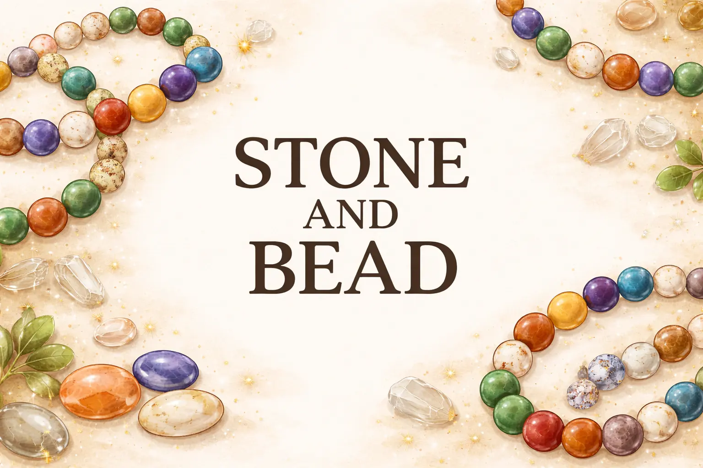

Ми створюємо прикраси, які поєднують стиль, енергію природи та сучасний дизайн.
Кожен браслет виготовляється вручну з якісних матеріалів.
Наша мета — допомогти клієнтам знайти прикрасу, яка підкреслить їх індивідуальність.

Stone and BeadБраслети з натурального каміння
Ми створюємо прикраси, які поєднують стиль, енергію природи та сучасний дизайн.
Кожен браслет виготовляється вручну з якісних матеріалів.
Наша мета — допомогти клієнтам знайти прикрасу, яка підкреслить їх індивідуальність.
Створення браслета починається з ретельного відбору натурального каміння. Кожен камінь проходить шліфування та полірування, щоб отримати гладку поверхню та насичений природний блиск. Після цього формується намистина — їй надається правильна кругла форма, після чого акуратно створюється отвір для збирання браслета. Завершальним етапом є ручне складання прикраси, що гарантує якість та довговічність виробу.